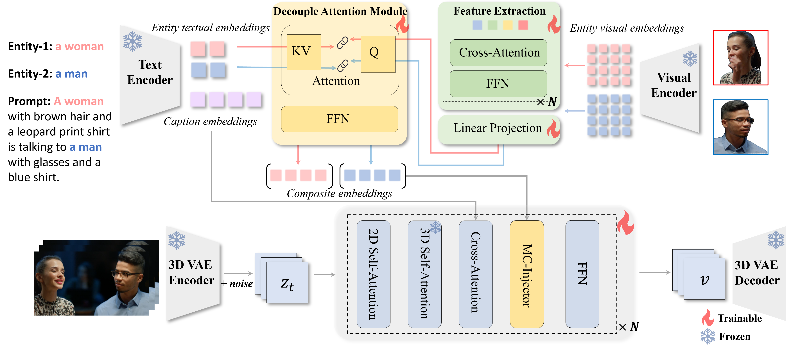
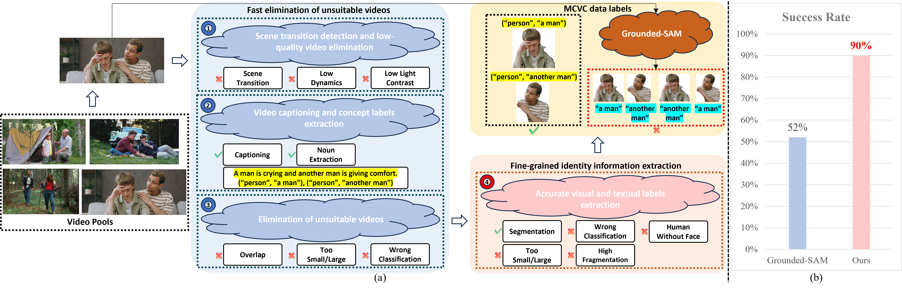

# Work done during an internship at KwaiVGI, Kuaishou Technology
✉ Corresponding Authors
Our proposed ConceptMaster is a Multi-Concept Video Customization (MCVC) method that could create high-quality and concept-consistent customized videos based on given multiple reference images without additional test-time tuning.
It is capable of handling diverse customized scenarios.
Text-to-video generation has made remarkable advancements through diffusion models. However, Multi-Concept Video Customization (MCVC) remains a significant challenge.
We identify two key challenges in this task: 1) the identity decoupling problem, where directly adopting existing customization methods inevitably mix attributes when handling multiple concepts simultaneously, and 2) the scarcity of high-quality video-entity pairs, which is crucial for training such a model that represents and decouples various concepts well.
To address these challenges, we introduce ConceptMaster, an innovative framework that effectively tackles the critical issues of identity decoupling while maintaining concept fidelity in customized videos.
Our ConceptMaster innovatively introduces a novel strategy of learning the decoupled multi-concept embeddings and injecting into the diffusion models in a standalone manner. The strategy effectively guarantees the quality of customized videos with multiple identities, even for highly similar visual concepts.
To further overcome the scarcity of high-quality MCVC data, we carefully establish a data construction pipeline, which enables systematic collection of precise multi-concept video-entity data across diverse concepts.
A comprehensive benchmark is designed to validate the effectiveness of our model from three critical dimensions: concept fidelity, identity decoupling ability, and video generation quality across six different concept composition scenarios.
Extensive experiments demonstrate that our ConceptMaster significantly outperforms previous approaches for this task, paving the way for generating personalized and semantically accurate videos across multiple concepts.
ConceptMaster on diverse multi-concept customized scenarios
1) Multiple Persons.
2) Persons with Livings.
3) Persons with Stuffs.
4) Multiple Livings.
5) Livings with Stuffs.
6) Persons with both Livings and Stuffs.
ConceptMaster framework

Overview of the framework of our proposed ConceptMaster.
Our key insight is to learn the decoupled multi-concept embeddings and inject into diffusion transformer models in a standalone manner.
Specifically, the process includes: 1) Extracting comprehensive visual embeddings from given reference images.
2) Incorporating visual representation with corresponding text description of every concept.
3) Introducing a novel multi-concept embeddings injection strategy.
The designed ConceptMaster could efficiently create high-fidelity customized videos during inference without additional parameter tuning,
which significantly provides the potential for the practicality of real-world applications.
Qualitative comparison on multi-concept customization.
We compare several open-sourced multi-concept image customization methods, combining with the image-to-video (I2V) generation model I2VGen-XL, as a naive solution for the MCVC task with our ConceptMaster.
Based on the generation results, our approach clearly demonstrates superior capabilities on concept fidelity, identity decoupling and caption semantic consistency.
Comparison with DreamBooth. We can see that Dreambooth could hardly solve the identity mixing problem.
Additionally, the tuning-based methods always require users to manually collect few-shot training samples for additional parameter-tuning,
which not only can be time-consuming, but collecting same concept in different scenes as training samples is cumbersome,
the situation is more intense for multi-concept video customization task.
Therefore, our ConceptMaster is obviously more practical for real-world applications.
Different injection methods of multi-concept references
While previous methods that the most representative ones include
1) BLIP-Diffusion, which combines visual and textual caption embeddings as the whole condition representation.
2) IP-Adapter, which encodes the whole image as visual embeddings and aggregates into models by a decoupled cross-attention layer.
Our key insight is to inject the represented multi-concept embeddings into the diffusion models in a standalone cross-attention layer.
Based on the generation results, our ConceptMaster adopts the most suitable manner of the injection of the multi-concept embeddings, which could represent and decouple multiple identities well.
Demonstration of the effectiveness of the Q-Former and DAM modules
We demonstrate more quantitative results of the effectiveness of the Q-Former and DAM modules, where we conduct several ablation architectures:
1) Replacing the Q-Former by an MLP layer.
2) Removing the DAM module, where only the extracted visual embeddings are further injected into the diffusion models.
3) Replacing DAM by firstly concatenating the visual and textual embeddings along channel dimension, and downsampling the dimension to the original one by an MLP layer.
4) Replacing the intra-pair cross-attention by self-attention.
Based on the generation results, our proposed Q-Former and DAM modules would be the best designated architectures to simultaneously represent and decouple multiple references.
ConceptMaster data collection pipeline

(a) The overview of multi-concept data collection pipeline.
When dealing with complex scenarios that contain concepts with high visual appearance or textual semantic similarity,
our data pipeline could still extract precise entity images and corresponding labels,
while simply exploit previous methods like Grounded-SAM would introduce a large number of errors and it is difficult to remove these errors through subsequent processing.
(b) The success rate of testing videos comparison between Grounded-SAM and our data pipeline.